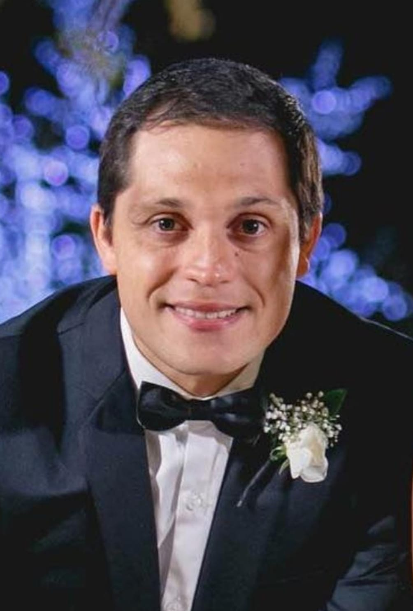

Inicio
Créditos
Prestadores
Nosotros
Pacientes
Iniciar sesión
Iniciar sesión con Google
Iniciar sesión con Facebook
¡NUESTRO EQUIPO!
Encuentra lo que buscas
Seleccione una categoría
Cirujanos
Odontólogos
Traumatólogos
Farmacias
Laboratorios
SPA
Cirujanos plásticos
Dr. Martín Sánchez
MP: 8740
Especialista en Cirugía plástica y reparadora.
Dirección:
Santiago 157
- San Miguel de Tucumán.
Horarios de atención:
Lunes de 16:00 a 20:00 hs.
Martes y jueves de 17:00 a 20:00 hs.
Sacar turno
Dr. Matías Luján
MP: 8437
Especialista en Cirugía plástica y reparadora.
Dirección:
25 de Mayo 730
- San Miguel de Tucumán.
Horarios de atención:
Lunes, martes y jueves de 17 a 20hs.
-------------------------------------------------
Sacar turno
Dr. Juan José Bonari
MP: 9268
Especialista en Cirugía plástica.
Salud y belleza.
SPA y cuidado personal.
Dirección:
Laprida 871
- San Miguel de Tucumán.
Horarios de atención:
Martes y jueves de 18:30 a 21:30 hs.
Sacar turno
Dr. Diego Andjel
MP: 8298
Especialista en Cirugía plástica y reparadora.
Dirección:
Gral. Paz 576
- San Miguel de Tucumán.
Horarios de atención:
Lunes y miércoles de 18 a 21 hs.
Jueves de 15:00 a 18:00 hs.
-------------------------------------------------
Sacar turno
Odontólog@s

Dr. Santiago Mora
MP: 1879
Odontólogo.
Dirección:
Salta 78 - 5° C
- San Miguel de Tucumán.
Horarios de atención:
Lun-Mar-Miér. y Viernes de 9 a 18 hs.
Jueves de 09:00 a 17:00 hs.
Sacar turno
Dr. Nicolás Panico
MP: 1873
Odontólogo.
Dirección:
San Lorenzo 935
- San Miguel de Tucumán.
Horarios de atención:
Lunes a jueves de 17:00 a 21:00 hs.
-------------------------------------------------
Sacar turno
Dra. Ana Eulogia Adad
MP: 2533
Odontóloga.
Dirección:
Corrientes 961
- San Miguel de Tucumán.
Horarios de atención:
Lunes y jueves de 09:00 a 12:00
Martes, jueves y viernes de 16 a 21 hs.
Sacar turno
Dra. Flor. Bonacina
MP: ...
Odontóloga.
Dirección:
Salta 78 - 5° C
- San Miguel de Tucumán.
Horarios de atención:
Lun-Mar-Miér. y Viernes de 9 a 18 hs.
Jueves de 09:00 a 17:00 hs.
Sacar turno
Traumatólogos
Dr. Maxi. Aparicio
MP: 8433
Especialista en Ortopedia y traumatología.
Dirección:
San Juan 417
- San Miguel de Tucumán.
Horarios de atención:
Miércoles y viernes desde 15 hs.
Sacar turno
Farmacias
Avellaneda Norte
Dirección:
Av. Sarmiento 199
- San Miguel de Tucumán.
Horarios de atención:
Lunes a sábado de 8:30 a 13:00 y de 17:00 a 21:30 hs.
Llamar
Laboratorios
Laboratorio Presti
Dirección:
Gral. Lamadrid 612
- San Miguel de Tucumán.
Horarios de atención:
Lunes a viernes de 7:00 a 20:00 hs.
Sábado de 08:00 a 12:00 hs.
Llamar
SPA
Kuwana
__________
Dirección:
Remedios de Escalada 150.
- Yerba Buena.
Horarios de atención:
Lunes a viernes de 09:00 a 21:00 hs.
-------------------------------------------------
-------------------------------------------------
-------------------------------------------------
Llamar
Esbelta
__________
Dirección:
San Juan 27.
- San Miguel de Tucumán.
Horarios de atención:
Lunes a viernes de 09:00 a 19:00 hs.
-------------------------------------------------
-------------------------------------------------
-------------------------------------------------
Llamar
Griselda Goritz
M.P: 890
Dermatocosmiatra matriculada
Tratamientos - Faciales - Corporales - Aparatología.
Dirección:
------
- San Miguel de Tucumán.
Horarios de atención:
Lunes a viernes de 09:00 a 19:00 hs.
Llamar
No hay resultados